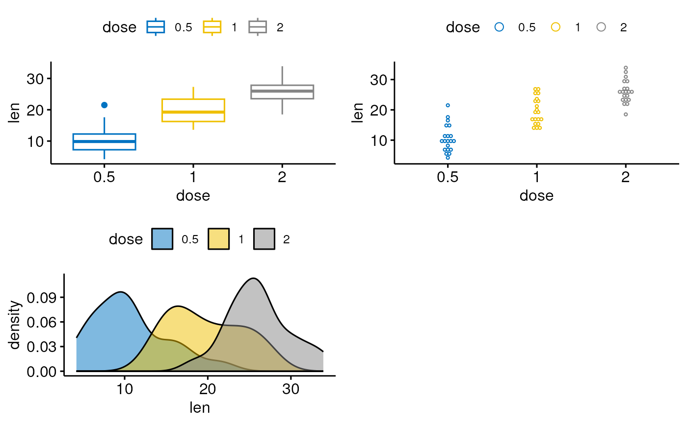
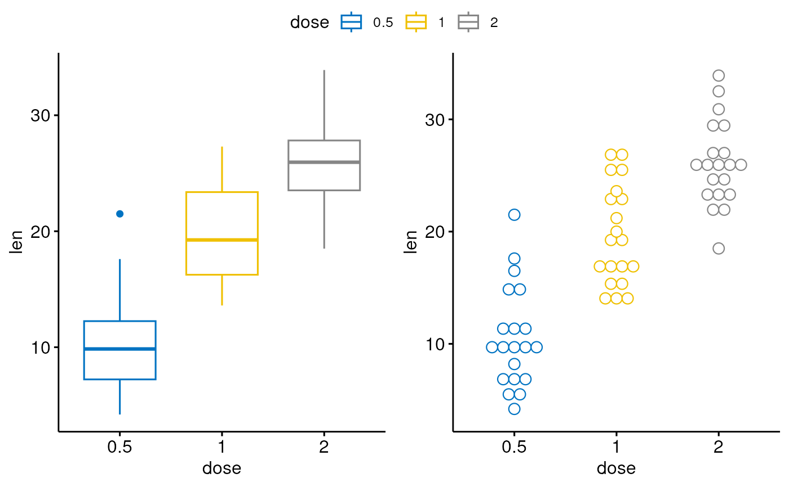

Arrange multiple ggplots on the same page. Wrapper around
plot_grid(). Can arrange multiple ggplots over
multiple pages, compared to the standard
plot_grid(). Can also create a common unique legend
for multiple plots.
ggarrange(
...,
plotlist = NULL,
ncol = NULL,
nrow = NULL,
labels = NULL,
label.x = 0,
label.y = 1,
hjust = -0.5,
vjust = 1.5,
font.label = list(size = 14, color = "black", face = "bold", family = NULL),
align = c("none", "h", "v", "hv"),
widths = 1,
heights = 1,
legend = NULL,
common.legend = FALSE,
legend.grob = NULL
)list of plots to be arranged into the grid. The plots can be either ggplot2 plot objects or arbitrary gtables.
(optional) list of plots to display.
(optional) number of columns in the plot grid.
(optional) number of rows in the plot grid.
(optional) list of labels to be added to the plots. You can also set labels="AUTO" to auto-generate upper-case labels or labels="auto" to auto-generate lower-case labels.
(optional) Single value or vector of x positions for plot labels, relative to each subplot. Defaults to 0 for all labels. (Each label is placed all the way to the left of each plot.)
(optional) Single value or vector of y positions for plot labels, relative to each subplot. Defaults to 1 for all labels. (Each label is placed all the way to the top of each plot.)
Adjusts the horizontal position of each label. More negative values move the label further to the right on the plot canvas. Can be a single value (applied to all labels) or a vector of values (one for each label). Default is -0.5.
Adjusts the vertical position of each label. More positive values move the label further down on the plot canvas. Can be a single value (applied to all labels) or a vector of values (one for each label). Default is 1.5.
a list of arguments for customizing labels. Allowed values are the combination of the following elements: size (e.g.: 14), face (e.g.: "plain", "bold", "italic", "bold.italic"), color (e.g.: "red") and family. For example font.label = list(size = 14, face = "bold", color ="red").
(optional) Specifies whether graphs in the grid should be horizontally ("h") or vertically ("v") aligned. Options are "none" (default), "hv" (align in both directions), "h", and "v".
(optional) numerical vector of relative columns widths. For example, in a two-column grid, widths = c(2, 1) would make the first column twice as wide as the second column.
same as widths but for column heights.
character specifying legend position. Allowed values are one of c("top", "bottom", "left", "right", "none"). To remove the legend use legend = "none".
logical value. Default is FALSE. If TRUE, a common unique legend will be created for arranged plots.
a legend grob as returned by the function
get_legend(). If provided, it will be used as the common
legend.
return an object of class ggarrange, which is a ggplot or a
list of ggplot.
data("ToothGrowth")
df <- ToothGrowth
df$dose <- as.factor(df$dose)
# Create some plots
# ::::::::::::::::::::::::::::::::::::::::::::::::::
# Box plot
bxp <- ggboxplot(df, x = "dose", y = "len",
color = "dose", palette = "jco")
# Dot plot
dp <- ggdotplot(df, x = "dose", y = "len",
color = "dose", palette = "jco")
# Density plot
dens <- ggdensity(df, x = "len", fill = "dose", palette = "jco")
# Arrange
# ::::::::::::::::::::::::::::::::::::::::::::::::::
ggarrange(bxp, dp, dens, ncol = 2, nrow = 2)
#> Bin width defaults to 1/30 of the range of the data. Pick better value with
#> `binwidth`.

# Use a common legend for multiple plots
ggarrange(bxp, dp, common.legend = TRUE)
#> Bin width defaults to 1/30 of the range of the data. Pick better value with
#> `binwidth`.
